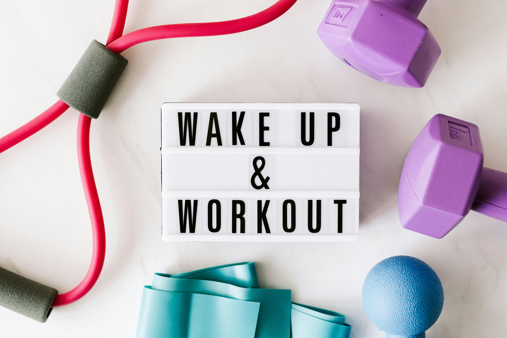

Quick & Healthy Habits
Effective and Quick Fitness
- 5-Minute Workouts You Can Do Anywhere
- Fitting Exercise into Your Lunch Break
- Walk and talk during phone calls
Smart Eating
- 10 healthy meals in under 10 minutes
- Eating Out Guilt-Free: Healthy Choices at Restaurants
- Batch Cooking Basics: Save Time, Eat Well
Stress Relief
- Quick Relaxation Techniques for Busy Days
- Integrating Mindfulness into Your Daily Routine
- Boundary Setting for Better Well-being
Sleep optimization
- Hacks for Better Sleep When You're Busy
- Creating a Quick Bedtime Routine
- The Link Between Sleep and Productivity
Ready to overcome the 'No Time' excuse?
Download Our Free Habit Tracker